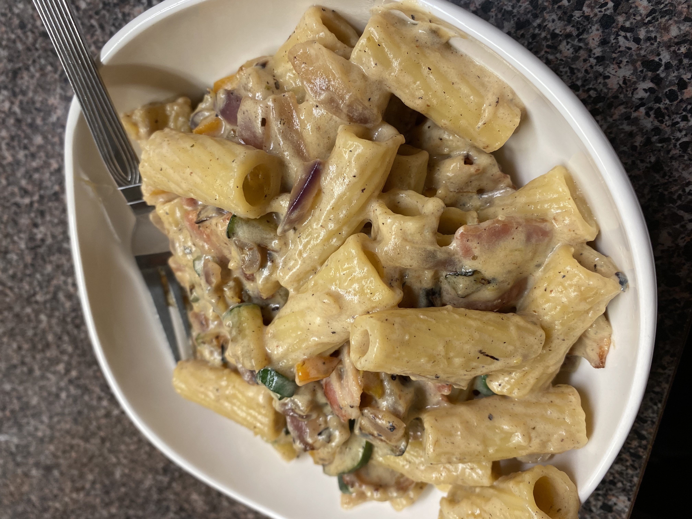

Creme Fraiche Bacon Recipe
Home

Description
This pasta is quick, easy to make, and extremely tasty.
This is the perfect recipe for an easy meal after a long day at work!
Ingredients
- 1/2 lb uncooked pasta
- 2/3 lb bacon (diced or sliced small)
- 2 cups leeks (chopped small)
- 2 cups creme fraiche
- 1/2 cup pasta cooking water
- 1 cup grated parmesan (and more to serve)
- 1/2 teaspoon ground black pepper (and more to serve)
Steps
- Get the pasta water boiling and cook the pasta al dente, then drain most of the water. Leave some water for the sauce.
While the pasta is cooking, make the sauce.
- Place diced or sliced bacon in a cold frying pan over medium high heat and cook, mixing often.
- Lower the heat to medium and add in the chopped leeks. Mix and cook for 3 minutes.
- The pasta should now be done, so add the creme fraiche and pasta cooking water to the bacon and leeks.
Mix well and then add in the shredded parmesan and ground black pepper. Bring to a simmer and let simmer
for 2 minutes. Then add the pasta and mix well.
- To serve, bring the pan from the heat and top with the grated parmesan and some ground black pepper.